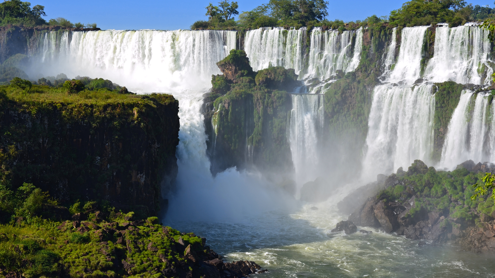

Położenie
Te piękne wodospady leżą na granicy argentyńsko-brazylijskiej na rzece Iguaçu. Wypływa ona z Serra do Mar (pasmo górskie w południowo-wschodniej Brazylii) i jeszcze przed Iguazu opada po blisko 70 progach skalnych. Wodospady znajdują się tuż przed ujściem rzeki do Parany (rzeki o długości 4700km).

O Wodospadzie
Wodospad ma szerokość szacowana na 2km i składa się z 275 odrębnych progów skalnych. Szum wody słyszalny jest w promieniu 20 km od wodospadu. Diabelska Gardziel jest uznawana za najciekawszą atrakcję tego miejsca. Leży na granicy argentyńsko-brazylijskiej. Woda w tym miejscu spada aż z 82 m, a więc z wysokości większej niż wodospad Niagara.

Turystyka
Na potrzeby turystów wybudowano specjalną infrastrukturę, między innymi liczącą 80 metrów długości kładką można przejść w pobliże najwyższego spadku wód, Diabelskiego Gardła. Natomiast nad wodospadem możliwe jest przejście wąskim podestem nad rzeką, sięgającym aż po kraniec wodospadu. Podest od czasu do czasu zmywa woda, gwałtownie przybierająca w rzece w porze deszczowej.
Jeżeli zamierzasz wybrać się nad Wodospady Iguazu, można je odwiedzić niezależnie od pory roku.
